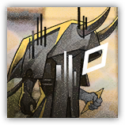

假想敌：再生 Hypothetical Enemy: Regeneration
近战 物理；精英 异怪（源石造物）

|
 |
假想敌。参照从源石中诞生的怪物而设计的假想敌。我们曾在罗德岛本舰与这样的敌人交战。 再生。它们不断地再生、爬起，借逝去者的外形施以杀戮。必须在模拟的战斗中找到更多的应对措施。 |
再生丨The Regeneration
中型异怪（源石造物），无阵营
| AC 15 | 先攻 +2（12） |
| HP 114（12d8+60） | |
| 速度 30 尺 | |
| 调整 | 豁免 | 调整 | 豁免 | 调整 | 豁免 | |||||||||
|---|---|---|---|---|---|---|---|---|---|---|---|---|---|---|
| 力量 | 18 | +4 | +4 | 敏捷 | 14 | +2 | +5 | 体质 | 20 | +5 | +5 | |||
| 智力 | 10 | +0 | +3 | 感知 | 10 | +0 | +3 | 魅力 | 16 | +3 | +3 |
| 免疫 中毒，麻痹，恐慌，魅惑 |
| 抗性 力场，心灵，光耀，暗蚀 |
| 感官 盲视60尺，被动察觉10 |
| 语言 无 |
| CR 7（XP2,900；PB+3） |
特质 Traits
尸布重塑 Shroud Reconstruction（1/日）。当再生的生命值降至0时，让自己以及源自自身20尺光环内的每个盟友获得20点临时生命值。只要再生持有此临时生命值，其不会死亡而仅陷入失能状态，若在下一轮结束时，再生以此获得的临时生命值未被耗尽，其恢复所有生命值。
动作 Actions
多重攻击 Multiattack。再生发动两次刻骨凿击。
刻骨凿击 Chiseling。近战攻击检定：+7，触及5尺。命中：13（2d6+4）穿刺伤害，外加14（4d6）暗蚀伤害。失手：14（4d6）暗蚀伤害。